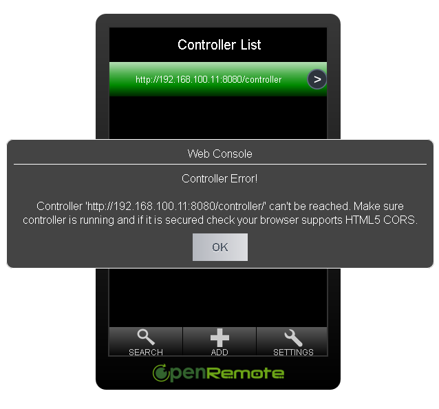

i cant connect from my Android phones to my server.
I designed only a ui so far, there is no remotecontrol device configureated.
Openremote is installed on Ubuntu 14.04 LTS
What i tried so far:
boot.log
INFO 2015-04-20 18:21:57,057 :
--------------------------------------------------------------------
DEPLOYING NEW CONTROLLER RUNTIME...
--------------------------------------------------------------------
INFO 2015-04-20 18:21:57,175 : No rule definitions found in '/opt/OpenRemote-Controller/webapps/controller/rules'.
INFO 2015-04-20 18:21:57,175 : Initialized event processor : Drools Rule Engine
INFO 2015-04-20 18:21:57,242 : Initialized event processor : RRD4J Data Logger
INFO 2015-04-20 18:21:57,242 : Initialized event processor : EmonCMS Data Logger
INFO 2015-04-20 18:21:57,244 : Startup complete.
INFO 2015-04-20 18:21:57,244 : Controller Definition File Watcher for Default Deployer started.
upload design via online and zipfile
OpenRemote-controller-xxx/webapps/controller
There you are the controller.xml, panel.xml and image files which you use in your design.
Check connection to server:
http://serverip:8080/controller/
notebook ->works
android ->works
http://192.168.178.11:8080/controller/rest/panels
notebook -> <openremote><panel id="11" name="Android"/></openremote>
android -> white page (maybe depends on the installed Internetviewer)
http://192.168.178.11:8080/controller/rest/panel/Android
notebook->
<openremote><screens><screen id="13" name="Starting Screen"><grid left="10" top="10" width="300" height="460" rows="5" cols="1"><cell x="0" y="0" rowspan="1" colspan="1"><button id="18" name="Button" hasControlCommand="true"><default><image src="power.png"/></default></button></cell><cell x="0" y="1" rowspan="1" colspan="1"><button id="20" name="Button"><default><image src="magnify+.png"/></default></button></cell><cell x="0" y="2" rowspan="1" colspan="1"><button id="22" name="Button"><default><image src="magnify-.png"/></default></button></cell></grid></screen></screens><groups><group id="12" name="Default Group"><include type="screen" ref="13"/></group></groups></openremote>
changed app setting port below ssl to port 8080
conf/server.xml
server port=8005
http-ThreadPool = 8080
ssl http port 8443
Connected via Win7 PC
http://serverip:8080/webconsole/
with the searchbutton i find my installed controller.
Ich i try to aktivate it an Error message apears:
Controller Error!
can't be reached. Make sure conroller is running and secured check your browser supports HTML5 Cors
i have no idear where the error comes from.
mybe the server?
best regard
sky
!1|thumbnail,align=left!
{kind=link}